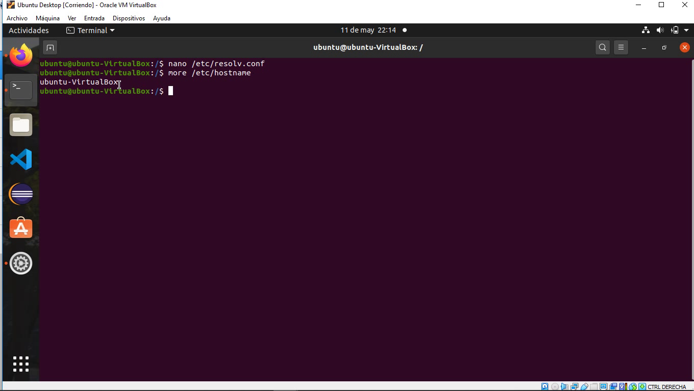
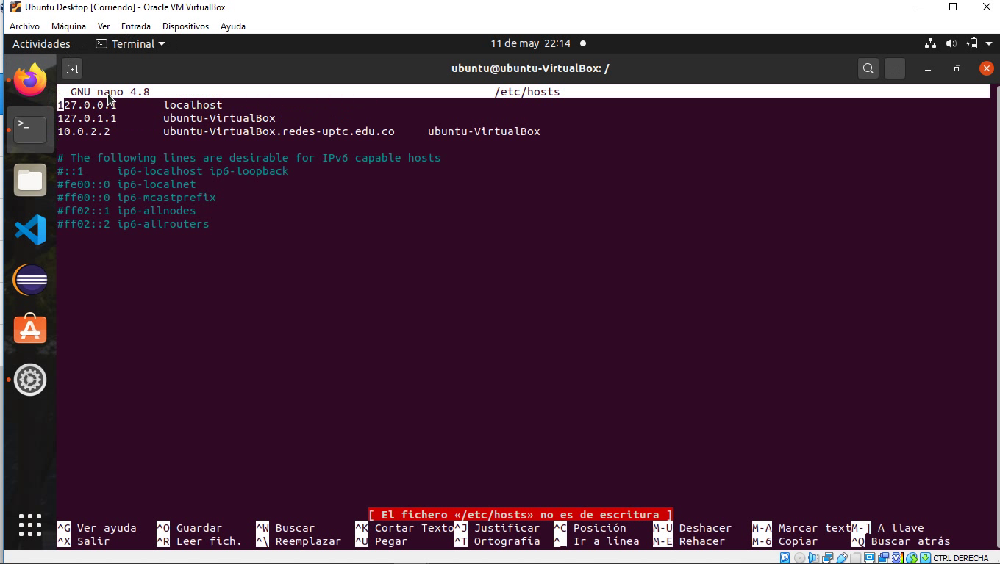
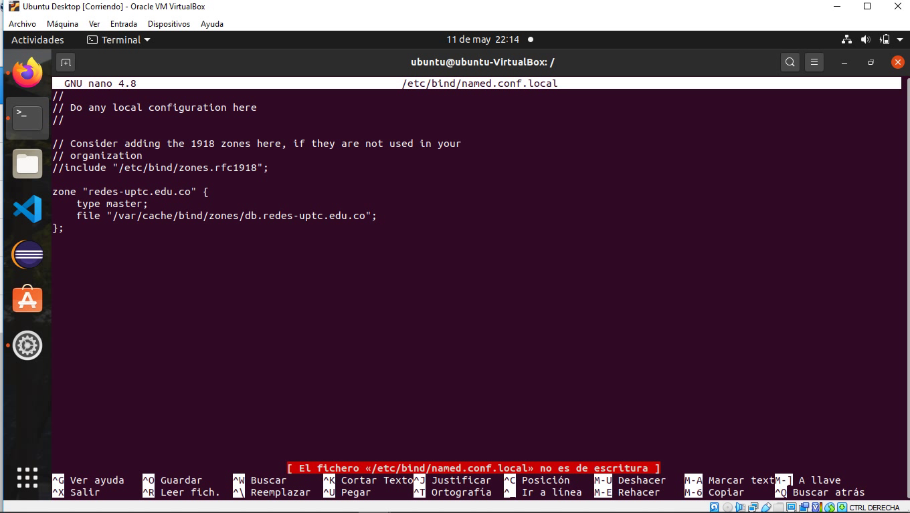
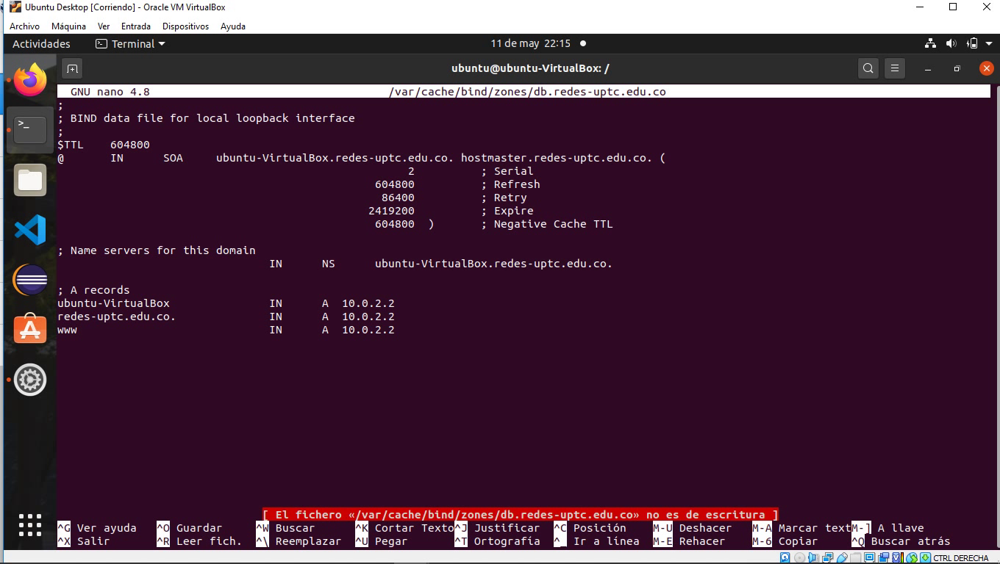
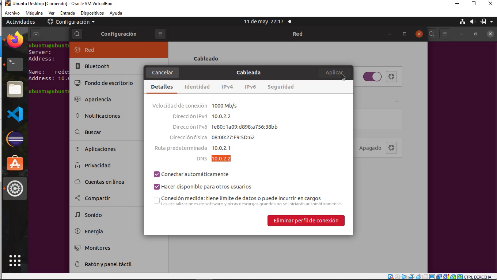

El DNS es un sistema de nombres para computadores, el cual traduce una dirección IP a una
dirección legible por humanos. Este proceso es la columna vertebral de Internet.
Cada sistema operativo tiene una copia de la tabla de nombres de host y dirección IP, en
Linux esa tabla es el archivo /etc/hosts, el sistema consultará este
archivo antes que el servidor DNS, asi que si existe, va a tomarlo como el nombre de la
dirección.
En la mayoría de servidores del mundo se utiliza BIND, un servidor
DNS. Y de manera similar a como funciona el archivo que contiene la tabla DNS del
sistema operativo, este se configura colocando los distintos nombres para ser
consumido.
A partir de configuraciones de zonas de dominios y subdominios se pretende conformar
una tabla para, por ejemplo una red interna.
Se debe instalar bind9 en la maquina virtual de Linux con el comando:
sudo atp-get install bind9
En el archivo con ruta /etc/bind/named.conf.options se debe
editar el valor forwarders de manera que esté así.
En el archivo con ruta /etc/resolv.conf de manera similar,
se debe editar el valor nameserver esta vez siendo la IP de la máquina.
En el archivo con ruta /etc/hostname muestra el nombre del host de la maquina.
En el archivo con ruta /etc/hosts se configura manualmente el nombre de cada IP, asi se utiliza redes.uptc.edu.co.
En el archivo con ruta /etc/bind/named.conf.local se debe agregar una nueva zona de acceso. Utilizando redes.uptc.edu.co para el nombre de esa zona y apuntando a su archivo de configuracion en /var/cache/bind/zones/db.redes.uptc.edu.co
En el archivo con ruta /var/cache/bind/zones/db.redes.uptc.edu.co se debe configurar la zona, apuntando en todos los casos a la IP de la máquina, ademas de colocar el nombre que ya ha sido utilizado antes redes.uptc.edu.co

De esta manera, se llega al punto de probar. Para esto se puede realizar un
PING hacia el nombre que se ha configurado
ping redes.uptc.uptc.co
Otra manera para probar el funcionamiento del servidor
nslookup redes.uptc.uptc.co
Y otra manera más para verificar que funciona es la interfaz del SO
